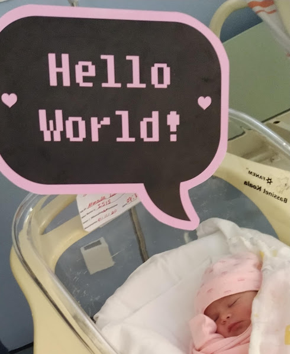
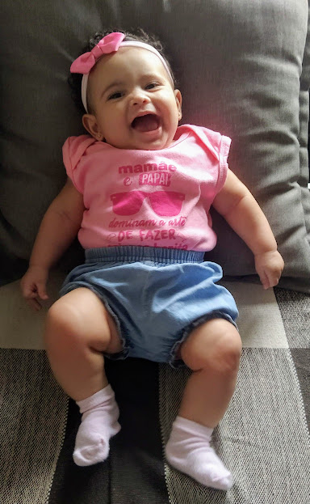
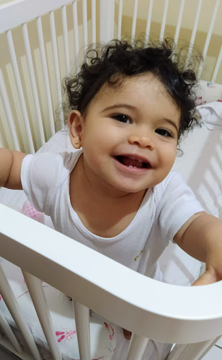
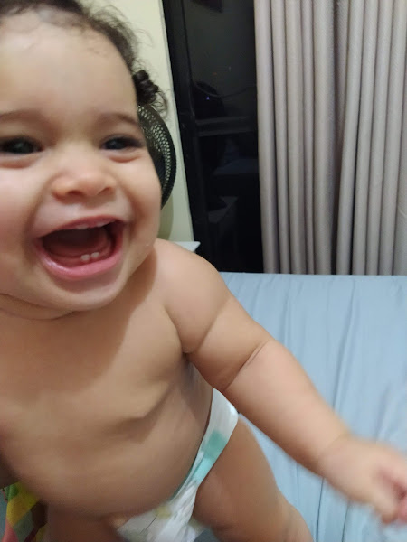
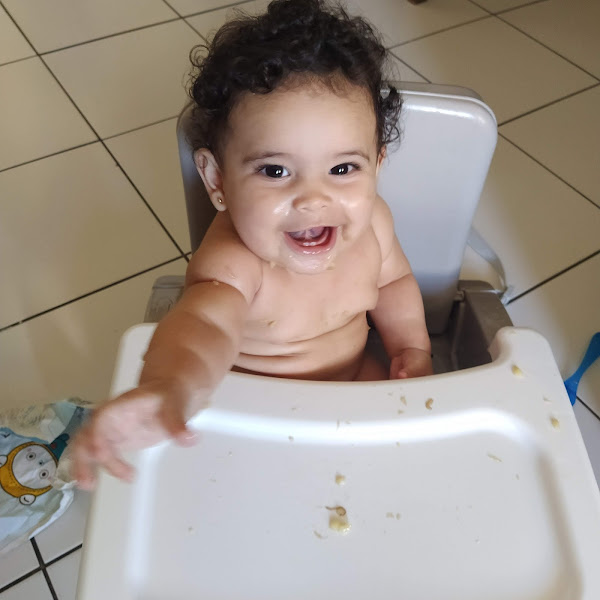
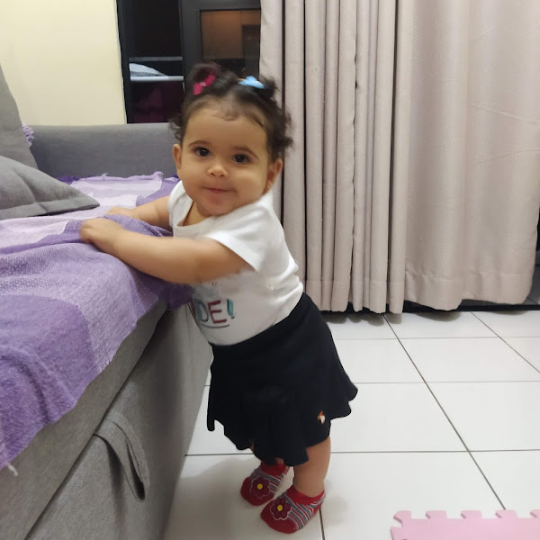

Acompanhe os primeiros passos do desenvolvimento no primeiro aninho da Dona Pequena.
Isis nasceu no dia 1º de novembro de 2020. De lá para cá já temos muitas histórias para compartilhar e cada dia na vida de um bebê é uma novidade...para os pais também (principalmente de primeira viagem).
Sorrisos
A nossa primeira descoberta no desenvolvimento da Dona Pequena foi quando ela começou a sorrir. E não parou mais desde então.
 Dentinhos
Aos 5 meses nasceram os primeiros dentinhos. Ela não sofreu muito, se aliviava fácil com seus mordedores.

Introdução Alimentar
Com 6 meses iniciamos a introdução alimentar da pequena. E a aceitação foi muito boa, que menininha para comer bem. Esperamos que continue assim!

De pé
Com 8 meses Isis já ensaiava os primeiros passinhos se segurando nos móveis.
